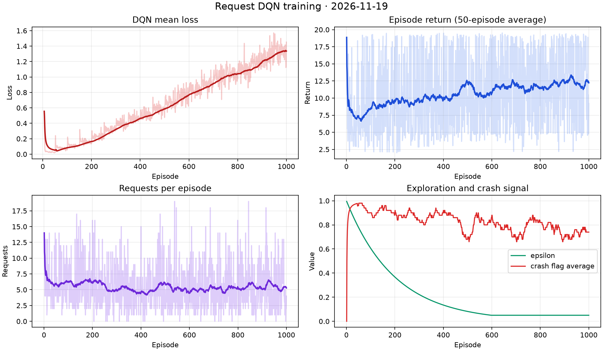

Experiment 1: Baseline Integration
Experiment 1 is the initial proof-of-concept pipeline connecting Farama's HighwayEnv, the neural World Model (MLPx), and the learned communication policy (Request DQN).
- World Model Checkpoint:
checkpoints/experiment_1/MLPx/best.pt - Request DQN Checkpoint:
checkpoints/experiment_1/RequestDQN/best.pt
Objective & Hypothesis
Can an autonomous ego vehicle on a multi-lane highway send discrete communication requests to neighboring vehicles, predict the outcomes of its candidate actions using a neural world model, and learn a Q-policy to decide when to ask?
Setup & Configuration
| Parameter | Setting | Description |
|---|---|---|
| Environment | CustomEnv | 4 lanes, 1 controlled ego, 9 background vehicles |
| Dataset Size | 26,597 transitions | Combined random exploration and simple request queries |
| World Model (WM1) | 116 in / 55 out | 3-layer MLP (256 → 256 → 128), MSE loss on next-state and reward |
| Planning Horizon | 3 steps | Simulates 5³ = 125 action trajectories |
| Request DQN (DQN1) | 1,000 episodes | ε-greedy Q-learning, communication cost = 0.05 per message |
Training Metrics
World Model Training Loss
The model converged cleanly on next-state kinematics and driving reward MSE:

Request DQN Training
Late episode returns improved, but high crash rates persisted:

Policy Driving Video
In this early baseline run, the ego vehicle queries neighbors, but frequently suffers rear-end and high-speed crashes because the driving planner has no speed cap or safety guardrails:
Key Findings & Lessons Learned
- Working Integration: Successfully proved the closed-loop pipeline between HighwayEnv, MLPx, and Request DQN.
- 3-Step Horizon Superiority: Rollout evaluation showed that a 3-step horizon had substantially lower reward error (0.34 MAE) and higher action agreement than a 5-step horizon (0.64 MAE), establishing the 3-step standard for all future experiments.
- High Collision Rates (>80%): Without safety guards, the ego car repeatedly accelerated into traffic ahead.
- Message Alignment Bug: In this initial version, messages were indexed by vehicle encounter order rather than fixed spatial positions relative to the ego. This required a dedicated architectural fix in Experiment 3.